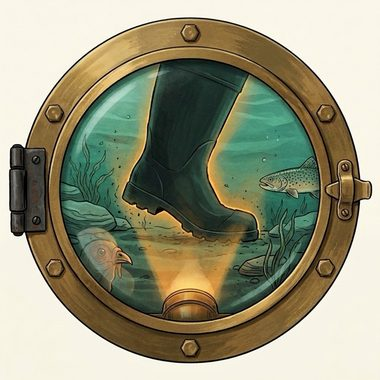

PAE-09 · TROUT TOWN · TOUR-KEY SUBMARINE
Porthole Slip 01 · Bow
DIVE 1 · AT 2:45IN THE FILM · TOURKEY TROUTTOWN
Porthole #: 01Sub Station: Bow
Rim Clue & River Rule: Giant Size 11 Rubber Boot blocking beam · Silhouette (SCION 02): backlit shadow
Crewmate B “River Witness #1”
TURKEY THINKS · PICK ONE, DRAW ITS SHAPE
ShipwreckGiant’s footTunnel
Crewmate C “River Witness #2”
THE TROUT THINK · PICK ONE, DRAW ITS SHAPE
Boot-sole flashlightToe-biting crab